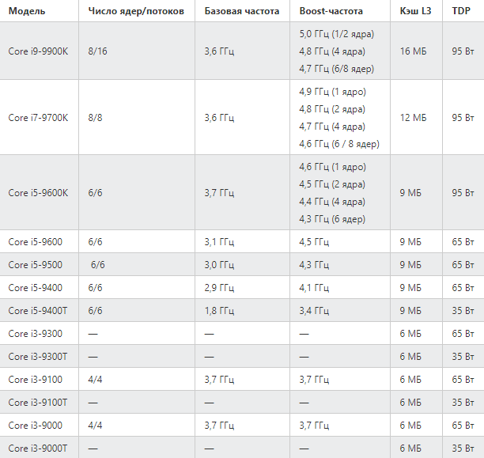
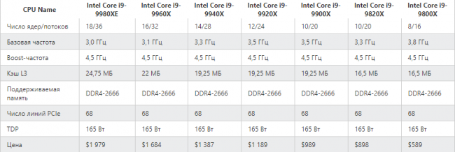

Компания Intel представила 9-е поколение процессоров Core, направленных на энтузиастов и геймеров. Девятое поколение Coffee Lake Refresh, как и восьмое, построено на базе 14-нм техпроцесса, но обещает больше возможностей для разгона (благодаря использованию припоя под крышкой). А еще в новых процессорах аппаратным образом защитились от уязвимостей Spectre и Meltdown. В числе представленных кристаллов присутствует модель Core i9-9900K, которую Intel называет «лучшим игровым процессором в мире». Камень предлагает 8 ядер и 16 потоков с базовой частотой 3,6 ГГц и может автоматически разгоняться до 5 ГГц.
Помимо нового процессора Core i9, Intel представила новые модели линеек Core i3, Core i5 и Core i7 девятого поколения: модель i7-9700K предложит 8 ядер и 8 потоков, работает на частоте 3,6 ГГц (4,9 ГГц в boost-режиме); i5-9600K оснащен шестью ядрами и шестью потоками, работающими на базовой частоте в 3,7 ГГц. В boost-режиме частота камня повышается до 4,6 ГГц.
Как уже отмечалось выше, несмотря на новое поколение, представленные кристаллы построены на базе 14-нм техпроцесса, который используется еще с процессоров 5-го поколения Broadwell, представленных в 2014 году. Новые чипы используют 14-нм++ техпроцесс, представленный Intel в 8-м поколении чипов Coffee Lake. Таким образом компания задерживает выход 10-нм процессоров Cannon Lake до 2019 года.
Предзаказы на новые процессоры 9-го поколения компания начнет принимать уже сегодня. Первые поставки должны начаться 19 октября. К слову, цены на новые процессы оказались более демократичными, чем на новые анонсированные модели линейки Core X, о которых мы поговорим ниже. Так, Core i9-9900K оценивается компанией в 488 долларов, модель i7-9700K – в 373 доллара, а i5-9600K обойдется в 262 доллара. Все процессоры будут поддерживать память DDR4 2666 МГц, 40 линий PCI-E и технологию AVX2.
Разумеется, компания не оставила в стороне и особую касту своих клиентов, предпочитающих самое дорогое и самое производительное железо. Intel представила обновление линейки процессоров серии Core X, пополнив ее семью новыми моделями, включая одну серии Extreme. Все построены на 14-нм++ техпроцессе. Все получили поддержку четырехканального режима памяти формата DDR4 2666, а также 68 линий PCI Express.
В число новых процессоров входят: флагманский Core i9-9980XE (18 ядер/36 потоков) с базовой частотой 3 ГГц, boost’ом до 4,5 ГГц и совсем не демократичной ценой в 1979 долларов; Core i9-9960X (16 ядер/32 потока) за 1684 доллара; Core i9-9940X (14 ядер /28 потоков, 3,3 ГГц/4,5ГГц) за 1 387 долларов; Core i9-9920X (12 ядер /24 потока, 3,5 ГГц/4,5 ГГц) за 1189 долларов; Core i9-9900X (10 ядер /потоков, 3,5 ГГц/4,5ГГц) за 989 долларов; 20Core i9-9820X (3,3 ГГц/4,5 ГГц, 10 ядер/20 потоков) за 898 доллара и Core i7-9800X (3,8 ГГц/4,5 ГГц, 8 ядер/16 потоков) за 589 долларов.
Профессиональные пользователи, которым необходима еще более высокая производительность, тоже не остались в стороне. Для них Intel припасла новый 28-ядерный и 56-поточный Intel Xeon W-3175X с базовой частотой 3,1 ГГц и boost-частотой до 4,3 ГГц. Данная новинка станет доступной для приобретения в декабре. К сожалению, Intel не назвала цену на данный процессор.